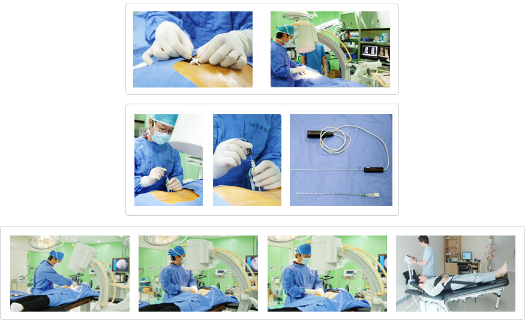

90%的脊椎疾病无需手术即可治疗
- 4无神经整形术
不老医院的“4无神经整形术（Navi）”是把2mm的细长管（导管）插入尾骨孔内接近患病部位后，再去除压住神经的组织，然后注入消炎药的方法，是一种几乎不损伤正常组织，并且短期内可恢复的治疗法。
这种手术方法不仅适合于腰椎患者，而且还适合颈椎、脊椎管狭窄症患者以及脊椎手术后仍有疼痛的患者，尤其适合于担心留下疤痕或害怕手术的年轻女性，而且可以马上恢复日常生活，因此非常适合年轻的脊椎患者。
- 治疗脊椎和狭窄的FIMS疗法
这是有效治疗神经粘连和炎症的方法，边用电脑拍摄装置（C-arm）拍摄边用特殊的针刺激脊椎肌肉的深部，来拓宽变窄的间盘间隔，同时用针挑开间盘和神经之间。
- 一次手术即可把间盘塞进去的高周波髓核减压术
这是一种新的手术方法，进行局部麻醉后，无需切割皮肤，只把高周波针插入间盘内部裹住裂开的纤维环部位之后，用50度左右的高周波热加热5～10分钟，就可以治疗裂开的纤维环部位和异常神经，消除疼痛，收缩间盘，恢复部分间盘。
- 治疗反复性慢性颈部腰部疼痛的硬膜外神经切断术
虽然注射一次就能治疗，但是根据疾病的程度，还使用将细长的管插入到硬膜外腔内，然后持续注入药物的方法。
- 3D Active Trac
很多患者都怕手术以及担心手术带来的负作用，因此通过既安全，成功率又高的3D Active Trac，无需手术，即可进行无痛治疗。3D Active Trac利用正确有效的立体间盘治疗方法来调整椎间盘（脊椎）的音压，矫正脊椎和骨盘。
治疗范围 – 腰部/颈部间盘突出，退变性间盘，脊椎狭窄症，坐/骨神经痛，急/慢性腰痛，后关节综合症，脊椎/骨盘矫正
- 治疗范围
腰部/颈部间盘突出，退变性间盘，脊椎狭窄症，坐/骨神经痛，急/慢性腰痛，后关节综合症，脊椎/骨盘矫正
